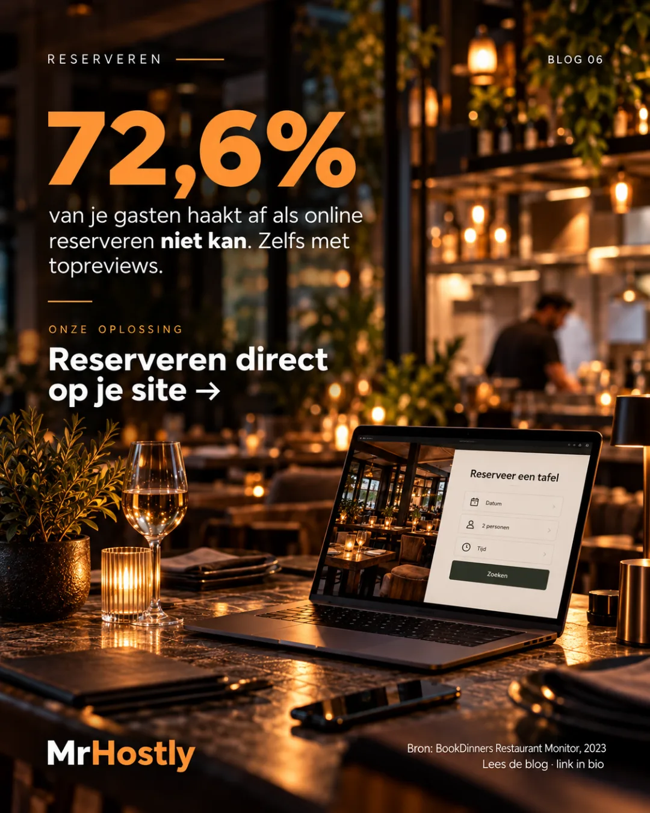
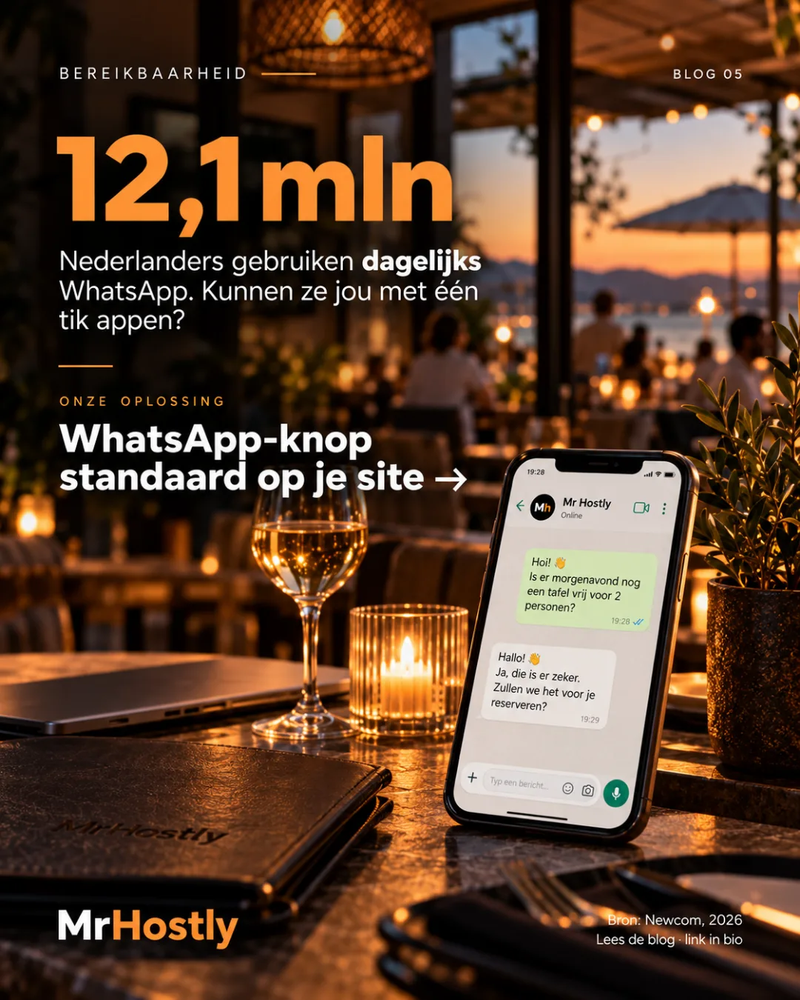
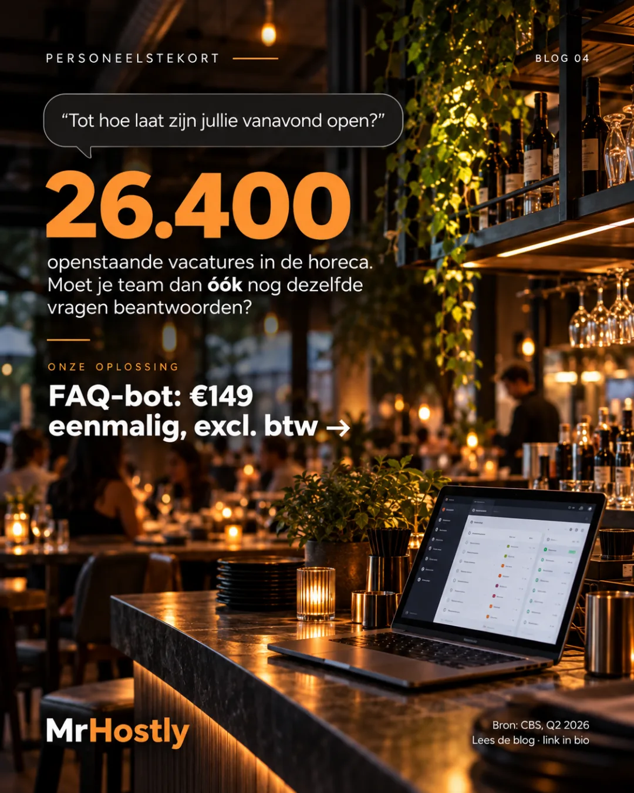
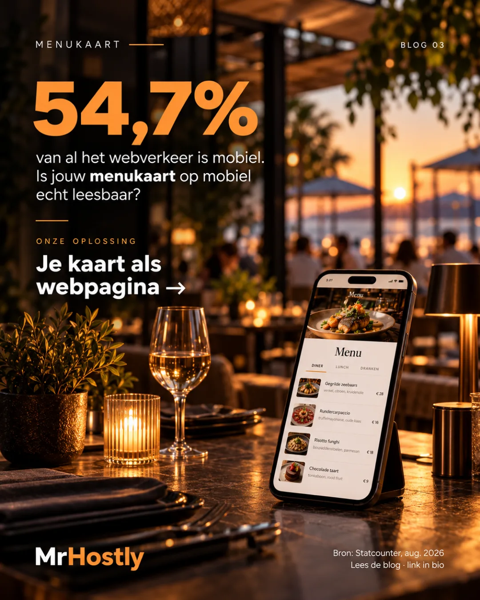
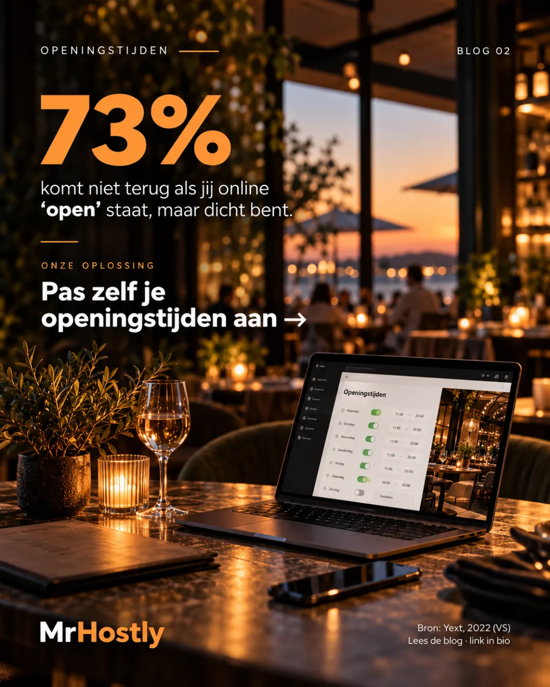
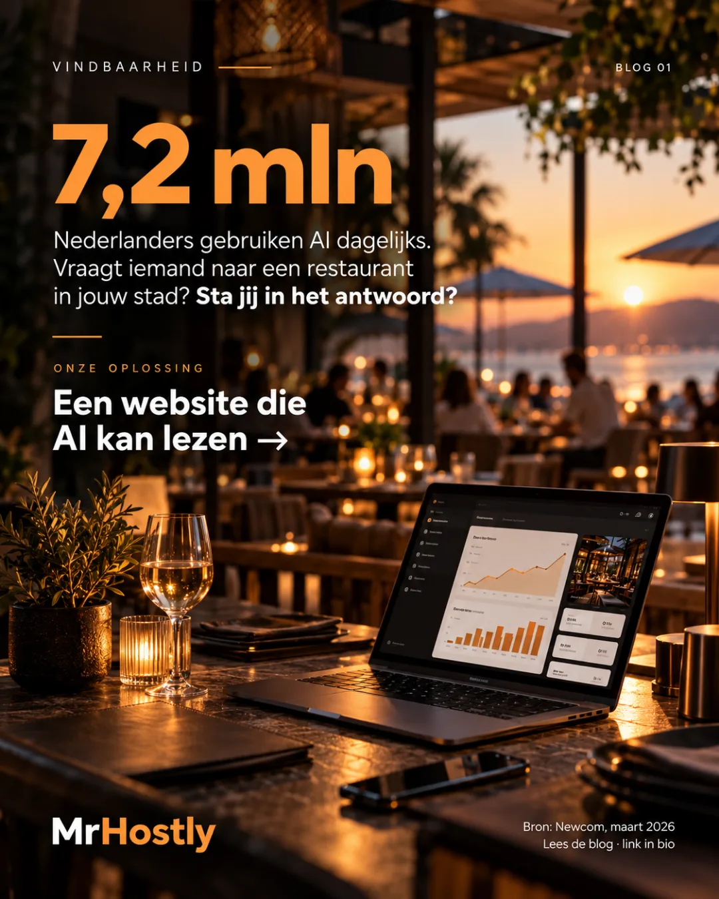

Een trage website kost je gasten voordat ze binnen zijn.
3 seconden laden? Dan is 53% van je mobiele bezoekers al weg. Waarom horecasites traag zijn — en hoe je het test.
Lees meer →Jouw gasten in Eindhoven spreken niet allemaal Nederlands.
1 op 9 inwoners van Zuidoost-Brabant heeft een buitenlandse nationaliteit. Is jouw kaart ook in het Engels te lezen?
Lees meer →
“Zit hier gluten in?” Die vraag komt nu online binnen.
14 allergenen waar je gast duidelijkheid over wil. Ook online. Ook om 23:00.
Lees meer →Cadeaubonnen: omzet binnen voordat de gast er is.
Er gaat jaarlijks zo'n €1,9 miljard om in cadeaukaarten. Kan iemand om 23:00 een bon van jouw zaak kopen?
Lees meer →
Reviews brengen de gast. Je website moet hem binnenhalen.
72,6% van je gasten haakt af als online reserveren niet kan. Zelfs met topreviews.
Lees meer →
Je gast zit elke dag op WhatsApp. Kan hij jou daar vinden?
12,1 miljoen Nederlanders gebruiken dagelijks WhatsApp. Waarom een WhatsApp-knop naast je telefoonnummer hoort.
Lees meer →
Personeelstekort? Laat je team niet steeds dezelfde vragen beantwoorden.
26.400 openstaande vacatures in de horeca. Moet je team dan óók nog steeds dezelfde vragen beantwoorden?
Lees meer →
Je menukaart als PDF? Je gast zit op zijn telefoon.
Meer dan de helft van je bezoekers ziet je kaart op een klein scherm. Waarom een PDF daar gasten kost.
Lees meer →
Foute openingstijden kosten je de gast die nooit meer terugkomt.
73% komt waarschijnlijk niet terug als je online 'open' stond maar dicht bleek. Zo houd je je info overal kloppend.
Lees meer →
Gasten vragen het nu aan ChatGPT. Sta jij in het antwoord?
7,2 miljoen Nederlanders gebruiken AI in het dagelijks leven. Wat dat betekent voor hoe gasten jouw zaak vinden.
Lees meer →No-shows in de horeca: wat ze écht kosten en hoe je ze halveert
No-shows liggen gemiddeld tussen 10-15%. We rekenen voor wat dat per maand kost — en hoe automatische herinneringen het verschil maken.
Lees meer →